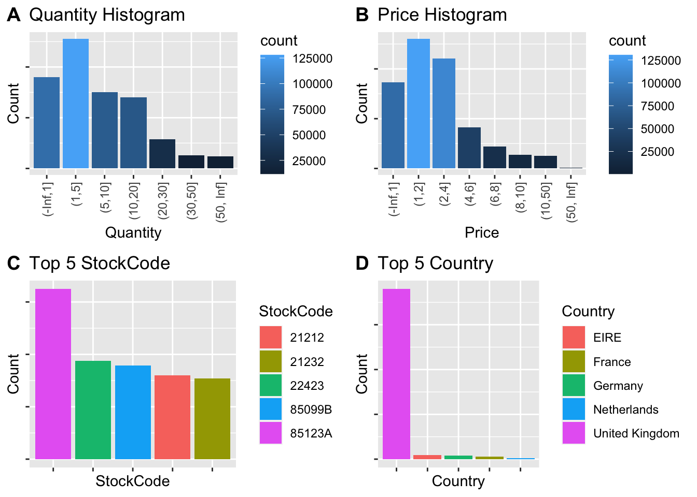
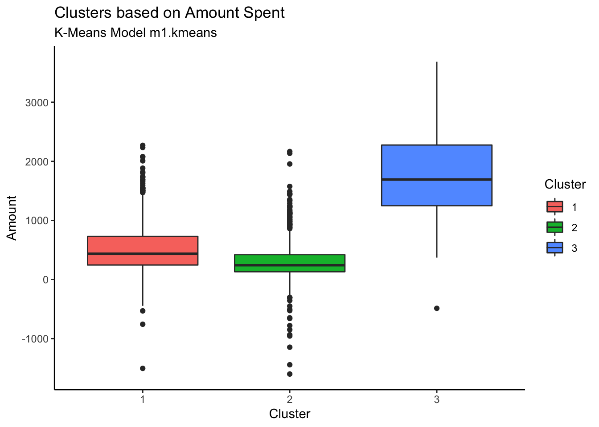

K-Means Clustering
1 Introduction
We have often heard of training machine learning models with labeled data. Imagine if there is a massive volume of data with no labels and we want to come up with a scalable approach to process these data and find insights. Difficult as it may seem, this is possible with clustering algorithms like K-Means.
Unsupervised machine learning is a type of algorithm that works on detecting patterns from a dataset when outcomes are not known or labeled. In unsupervised learning models it is not possible to train the algorithm the way we would normally do in case of supervised learning. This is because the data is neither classified nor labeled and allows the algorithm to act on the information without supervision. An unsupervised algorithm works on discovering the underlying hidden structure, pattern or association of the data and that helps the model in clustering or grouping the data without any human intervention.
The main goal of this paper is to discuss the concept and underlying methodology of one the unsupervised algorithm called K-Means clustering. We will also discuss how K-Means can be leveraged in real time applications like customer segmentation (Yulin 2020). In this paper, we will also be discussing various limitations and bottlenecks of K-Means clustering algorithm and would suggest some improved algorithms to overcome these limitations.
1.1 K-Means Clustering
K-means clustering is used for grouping similar observations together by minimizing the Euclidean distance between them. It uses “centroids”. Initially, it randomly chooses K different points in the data and assigns every data point to their nearest centroid. Once all of them are assigned, it moves the centroid to the average of points assigned to it. When the assigned centroid stops changing, we get the converged data points in separate clusters.
1.2 Customer Segmentation
Customer segmentation helps divide customers into different groups based on their common set of characteristics (like age, gender, spending habit, credit score, etc.) that helps in targeting those customers for marketing purposes. The primary focus of customer segmentation is to come up with strategies that helps in identifying customers in each category in order to maximize the profit by optimizing the services and products. Therefore, customer segmentation helps businesses in promoting the right product to the right customer to increase profits(Tabianan 2022).
Customer segmentation is not only helpful for business but also helps customers by providing them information relevant to their needs. If customers receive too much information which is not related to their regular purchase or their interest on the products, it can cause confusion on deciding their needs. This might lead their customers to give up on purchasing the items they required and effect the business to lose their potential customers. The clustering analysis will help to categorize the customer according to their spending habit, purchase habit or specific product or brand the customers interested in. Customer segmentation can be broadly divided into four factors - demographic psychographic, behavioral, and geographic(Tabianan 2022). In this paper, customer behavioral factor has been primarily focused.

K-Means clustering algorithm can help effectively extract groups of customers with similar characteristics and purchasing behavior which in turn helps businesses to specify their differentiated marketing campaign and become more customer-centric.(Yulin 2020)
1.3 Limitations
One of the challenges of K-means clustering is determining an appropriate number of clusters, or the K-value. While this can be a challenge for datasets of any size, it is especially difficult to determine a reasonable K-value with very large datasets and those with high dimensionality, since it is much more difficult to visualize the data. The K-means clustering algorithm was developed in the 1960s, before the advent of the internet and the resulting era of big data, and as such, it was not designed for datasets of such large scale (Sinaga and Yang 2020).
Another limitation is the algorithm’s tendency to converge to only the local optimum solution, rather than the global minimum. The algorithm is sensitive to the initial centroid values selected, to noise, and to outliers, all of which can cause cluster centers to veer off, resulting in a local minimum solution (Jie et al. 2020).
The shape of data clusters is another concern. K-means clustering typically classifies n-hyperspherically shaped data well but is less successful at classifying irregularly shaped clusters (Ahmed, Seraj, and Islam 2020).
1.4 Improved K-Means
Researchers have developed methods to address the limitations of the K-means clustering algorithm.
One popular approach to determining an appropriate K-value is to use the “elbow method”. This method estimates K by calculating the sum of squared error (SSE) for a range of K-values; the SSE values are plotted against the K values. The point before the change in SSE becomes visually minimal (the elbow) is selected as the K-value (Nagaraj et al. 2022).
To overcome the challenge of selecting a K-value for very large datasets, researchers have developed a “novel unsupervised k-means (U-k-means) clustering algorithm.” This algorithm has a built-in process to determine the K-value and perform K-means clustering using the concept of entropy, and thus does not require any parameter initialization by the user. On the first iteration, the K-value is initialized as the number of data points. Gradually, extra clusters are discarded until the “best” number of clusters is found (Sinaga and Yang 2020).
Other researchers have developed methods utilizing data density to determine the K-value, approximate better initial cluster centroids, and detect outliers. For one proposed variation of the K-means algorithm, first, regional density is calculated using a CLIQUE grid (CLustering In QUEst). In the CLIQUE grid, each dimension is divided into equal parts and the number of data points is calculated within each cell. Cells with counts above a defined threshold are defined as dense units, and adjacent dense units are connected to determine regional density. Noise in areas of low density is removed. Next, a density-based clustering algorithm based on the Clustering by Fast Search and Find of Density Peaks (CFSFDP) algorithm is used to calculate the local density of each point to determine initial cluster centers. This method can be used with datasets of any shape and does not require that a K-value be initialized (Xu et al. 2020).
2 Methods
Below diagram illustrates how the convergence is achieved in K-Means in several iterations.
There are multiple iterations performed with different initial cluster centers. However, in each round of the iteration, following steps are performed to achieve convergence(Stefanowski 2008):
- A random selection is made to assign initial centers (Shown as K1, K2 and K3)
- Distance between these initial centers and other points are analyzed. Points are assigned to appropriate clusters based on their distance from these center points
- New cluster centers are sought by finding the mean of the newly formed clusters. You can see how K1, K2 and K3 are shifting in this step
- Steps A, B and C are repeated in multiple iterations until there is no shift detected in the cluster centers K, K2 and K3
Let’s look at the mathematical implementation of this algorithm(Yulin 2020),
Proximity Measures
K-means calculates proximity between data points and centroids to place the data in appropriate cluster. There are several methods to calculate this proximity and the choice of the method plays a critical role in defining the shape of the cluster. Euclidean distance measurement is the most general method used.
\[ D(x, y) = \sqrt{\sum_{i = 1}^{n}{(x_i - y_i)^2}} \]
Algorithm
Suppose there is a dataset D that contains n data points and it was decided that there will be k clusters (and hence k initial cluster centers).
\[ Z_j(I), j = 1, 2, 3,...k. \]
Calculate the Euclidean distance between each data point and the cluster center, \(D(x_i, Z_j(I)), i = 1, 2, ...n; j = 1, 2,...k.\), if below is satisfied:
\[ D(x_i, Z_k(I)) = min{D(x_i, Z_j(I)), j = 1, 2,...n} \]
Now, calculate the new cluster center by calculating the error square sum criterion function J: changes
\[ J = \sum_{j = 1}^{k}\sum_{k = 1}^{n_j}||X_k^{(j)}-Z_j(I)||^2 \]
3 Analysis and Results
3.1 Dataset Description
For the customer segmentation, we will be using a data set that contains all the transactions that has occurred for a UK-based non-store online retail between 01/12/2009 and 09/12/2011. The company mainly sells unique all-occasion gift-ware. Many customers of the company are wholesalers. The company was established in 80s as a storefront and relied on direct mailing catalogues and taken order over phone. In recent years, the company launched a website and shifted completely to a web based online retail to take technological advantage of customer-centric targeted marketing approach(Chen 2010).
The customer transactions dataset has 8 variables as shown in below data definition table.
| Attribute | Type | Description |
|---|---|---|
| Invoice | Nominal | Invoice number. A 6-digit integral number uniquely assigned to each transaction. If this code starts with the letter `c`, it indicates a cancellation. |
| StockCode | Nominal | Product (item) code. A 5-digit integral number uniquely assigned to each distinct product. |
| Description | Nominal | Product (item) name. |
| Quantity | Numeric | The quantities of each product (item) per transaction. |
| InvoiceDate | Numeric | Invice date and time. The day and time when a transaction was generated. |
| Price | Numeric | Product price per unit in sterling (£). |
| CustomerID | Numeric | Customer number. A 5-digit integral number uniquely assigned to each customer. |
| Country | Nominal | Country name. The name of the country where a customer resides. |
3.2 Load and Preview Data
Load the dataset and summarize column statistics.
| Invoice | StockCode | Description | Quantity | InvoiceDate | Price | CustomerID | Country |
|---|---|---|---|---|---|---|---|
| 489434 | 85048 | 15CM CHRISTMAS GLASS BALL 20 LIGHTS | 12 | 2009-12-01 07:45:00 | 6.95 | 13085 | United Kingdom |
| 489434 | 79323P | PINK CHERRY LIGHTS | 12 | 2009-12-01 07:45:00 | 6.75 | 13085 | United Kingdom |
| 489434 | 79323W | WHITE CHERRY LIGHTS | 12 | 2009-12-01 07:45:00 | 6.75 | 13085 | United Kingdom |
| 489434 | 22041 | RECORD FRAME 7" SINGLE SIZE | 48 | 2009-12-01 07:45:00 | 2.10 | 13085 | United Kingdom |
| 489434 | 21232 | STRAWBERRY CERAMIC TRINKET BOX | 24 | 2009-12-01 07:45:00 | 1.25 | 13085 | United Kingdom |
| 489434 | 22064 | PINK DOUGHNUT TRINKET POT | 24 | 2009-12-01 07:45:00 | 1.65 | 13085 | United Kingdom |
Let us check the distribution of each field by doing univariate analysis.
Plot:
- Bar chart for categorical attributes
- Histogram for numeric attributes

From the visualizations, we get a good amount of information about the structure of our chosen data. Below are the observations:
- The Quantity is heavily skewed right and most of the transactions involved a quantity in the range of 1 to 5
- The unit Price is also skewed right and most of the items have unit price between 1 and 4
- The item with StockCode 85123A was sold most
- Most of the customers belong to United Kingdom
3.3 Data Preparation
Before we prepare the data, let’s take a look at the summary and see if there are any missing values or other trends.
| N | Missing | Mean | SD | Min | Q1 | Median | Q3 | Max | |
|---|---|---|---|---|---|---|---|---|---|
| Quantity | 525461 | 0 | 10.34 | 107.42 | -9600.00 | 1.00 | 3.0 | 10.00 | 19152.00 |
| Price | 525461 | 0 | 4.69 | 146.13 | -53594.36 | 1.25 | 2.1 | 4.21 | 25111.09 |
| Customer Id | 417534 | 107927 | - | - | - | - | - | - | - |
For conducting our analysis, we will be applying below listed data pre-processing steps on the original dataset:
- The CustomerID contains unique Id for each unique Customer. However, we have 107,927 customers with no customer ids. We will be removing these customer before starting our analysis.
Code
#remove missing value
df=na.omit(df, cols="CustomerID")Now, the total records are 417, 534
- Select appropriate attributes that helps in our analysis - CustomerID, Invoice, Quantity, InvoiceDate and Price
Code
#remove description
data = subset(df, select = -c(Description, Country, StockCode) )- Create a new attribute Amount. This will help in clustering these customers by the total amount spent. Group the data by customer id to get each unique customer and the total amount spent by them
Code
data$Amount = data$Quantity * data$Price
customer_monetary <- as.data.frame(data %>%
group_by(CustomerID) %>%
summarise(Amount = sum(Amount)))
# customer_monetary- Group the data by customer id to get each unique customer and the number of times (Frequency) they visited the store (by counting their numebr of invoices)
Code
customer_frequency <- as.data.frame(data %>% group_by(CustomerID) %>% summarise(Invoice = n()))
names(customer_frequency)[names(customer_frequency) == "Invoice"] <- "Frequency"
# customer_frequency- Create a new attribute LastSeen. This will be calculated by subtracting the InvoiceDate from the max(InvoiceDate) and will show how many days have passed since the customer was last seen shopping. Group the data by customer id to get each unique customer and the minimum of the LastSeen.
Code
# data$LastSeen = as.numeric(max(data$InvoiceDate) - data$InvoiceDate)
data$LastSeen =as.integer(difftime(max(data$InvoiceDate), data$InvoiceDate, units = "days"))
customer_lastseen <- as.data.frame(data %>% group_by(CustomerID) %>% summarise(LastSeen = min(LastSeen)))
# head(customer_lastseen)
# summary(customer_lastseen)- Merge the above data frames to get unique customer and their total amount, frequency of visit to the store and the LastSeen shopping in the store
Code
customer <- merge(customer_monetary, customer_frequency, by = 'CustomerID')
customer <- merge(customer, customer_lastseen, by = 'CustomerID')
# head(customer)
# summary(customer)
# nrow(customer)- Detect outliers and remove them. To create meaningful clusters, we will be removing outliers from numeric columns Amount, Invoice and LastSeen
Code
melt(customer[,2:4]) %>% ggplot(aes(x=variable, y=value)) + geom_boxplot(aes(fill=variable), outlier.colour = NULL) + theme(legend.position="none")
Looking at the above graph, there are outliers that need to be addressed to get accurate clustering results.
Code
# create detect outlier function
detect_outlier <- function(x) {
# calculate first quantile
Quantile1 <- quantile(x, probs=.25)
# calculate third quantile
Quantile3 <- quantile(x, probs=.75)
# calculate inter quartile range
IQR = Quantile3-Quantile1
# return true or false
x > Quantile3 + (IQR*1.5) | x < Quantile1 - (IQR*1.5)
}
# create remove outlier function
remove_outlier <- function(dataframe,
columns=names(dataframe)) {
# for loop to traverse in columns vector
for (col in columns) {
# remove observation if it satisfies outlier function
dataframe <- dataframe[!detect_outlier(dataframe[[col]]), ]
}
return(dataframe)
# print("Remove outliers")
# print(dataframe)
}Code
# detect_outlier(customer$Amount)
customer <- remove_outlier(customer, c('Amount','Frequency','LastSeen'))
# summary(customer)
# customer
# nrow(customer)Now, after removing outliers and cleaning up the data, we see normal distribution of the Amount, Frequency and LastSeen columns.
Code
melt(customer[,2:4]) %>% ggplot(aes(x=variable, y=value)) + geom_boxplot(aes(fill=variable), outlier.colour = NULL) + theme(legend.position="none")
- Scale the data. Since K-Means utilizes the proximity of data points based on Euclidean distance, it is important to reconcile all dimensions into a standard scale.
Code
customer_details <- customer
customer <- customer %>% select(-CustomerID)
# scale numeric attributes
customer_scaled <- customer %>% mutate_at(c("Amount", "Frequency", "LastSeen"), ~(scale(.) %>% as.vector))
# head(customer_scaled)
# summary(customer_scaled)3.4 Target Dataset Analysis
We started our analysis with total 525461 records but after preparing and cleansing the data, we are left with total 3674 records to be analyzed.
| Attribute | Type | Description |
|---|---|---|
| CustomerID | Numeric | Customer number. A 5-digit integral number uniquely assigned to each customer. |
| Amount | Numeric | Total Amount spent by each unique customer |
| Frequency | Numeric | Number of times customer made purchases bases on their invoice. |
| LastSeen | Numeric | Days elapsed since the customer was last seen shopping. |
| Mean | Min | Q1 | Median | Q3 | Max | |
|---|---|---|---|---|---|---|
| Amount | 776.5 | -1598.7 | 241.5 | 515.1 | 1091.4 | 3685.1 |
| Frequency | 48.15 | 1 | 15.0 | 34.0 | 70.0 | 183.0 |
| LastSeen | 101.8 | 0 | 23.0 | 62.0 | 163.0 | 373.0 |
3.5 Statistical Modeling
3.5.1 Number of clusters (K)
One of the challenges in the K-Means clustering is determining initial value of K to ensure the resulting solution actually represents the underlying structure in the data. The reliability and the performance of a clustering algorithm is directly affected by the initial choice of the number of clusters (K).
3.5.1.1 Elbow Method
We will be using a popular method called Elbow Method to determine the optimal value of K. The underlying idea behind this method is that it calculates values of cost with changing K. As the value of K increases, the cluster will have fewer data points and the distortion (within cluster sum of square) will decrease. The larger number of clusters (and hence the lesser number of data points within the cluster) implies the data points are closer to the centroid. So, the point where this distortion declines the most is the elbow point.(STEINLEY 2011)
Code
fviz_nbclust(customer_scaled, kmeans, method = "wss") +
geom_vline(xintercept = 3, linetype = 2)+
labs(subtitle = "Elbow Method")
3.5.1.2 Silhouette Method
Another way to find the optimal number of clusters in K-Means is Silhouette Method. We will be using it to double check the results we obtained from the above Elbow method. The silhouette method calculates a coefficient (called silhouette coefficient) which is a measure of how similar a data point is within-cluster (cohesion) compared to other clusters (separation).
Code
fviz_nbclust(customer_scaled, kmeans, method = "silhouette")+ theme_classic()+
labs(subtitle = "Silhouette Method")3.5.1.3 Gap Statistic Method
The basic idea of the Gap Statistics is to choose the number of K, where the biggest jump in within-cluster distance occurred, based on the overall behavior of uniformly drawn samples.(R. Tibshirani and Hastie 2001)
Code
set.seed(123)
gap_stat <- clusGap(customer_scaled, FUN = kmeans, nstart = 25, K.max = 10, B = 50)
fviz_gap_stat(gap_stat)
From the above Elbow, Silhouette and Gap Statistics graphs we can observe the elbow point is at ‘3’. So, we can pick 3 as our k value for number of clusters.
\[ K = 3 \]
3.5.2 K-Means Model
Now, we will create the K-Means model for K = 3.
Code
# Compute k-means with k = 3
set.seed(123)
k = 3
m1.kmean <- customer_scaled %>% kmeans(k, iter.max = 20, nstart = 25)
#nstart option that attempts multiple initial configurations and reports on the best one
# m1.kmean$cluster
#Add Clusters to the original dataframe
customer$Cluster <- as.factor(m1.kmean$cluster)From the above model, we can observe that 3 clusters are formed with sizes 1807, 953, 914.
Now, we can extract the clusters and add to our initial data to do some descriptive statistics at the cluster level. Below table summarizes the original dataset grouped by clusters to show the mean of the variables:
Code
clustStats <- customer %>%
group_by(Cluster) %>%
summarise_all("mean")
clustStats %>%
kbl() %>%
kable_paper("hover", full_width = T)| Cluster | Amount | Frequency | LastSeen |
|---|---|---|---|
| 1 | 514.2098 | 32.46375 | 51.45102 |
| 2 | 309.8873 | 21.64953 | 251.48478 |
| 3 | 1781.5403 | 106.80197 | 45.15536 |
Code
# centers <- data.frame(c(1:3), m1.kmean$centers)
# names(centers)[names(centers) == "c.1.3."] <- "Cluster"
# centers
#customer
# p <- plot_ly(customer, x=~Amount, y=~Frequency,
# z=~LastSeen, color=~Cluster) %>%
# add_markers(size=1.5)
# print(p)
fviz_cluster(m1.kmean, data = customer_scaled,
palette = c("#2E9FDF", "#00AFBB", "#E7B800"),
geom = "point",
ellipse.type = "convex",
ggtheme = theme_bw()
)
The above graph shows the clusters created using all columns of customer dataframe using the first two principle components to define the X-Y coordinates of each observation.
Code
fviz_cluster(m1.kmean, data = customer_scaled,choose.vars = c("LastSeen","Amount"),
palette = c("#2E9FDF", "#00AFBB", "#E7B800"),
geom = "point",
ellipse.type = "convex",
ggtheme = theme_bw()
)
Code
fviz_cluster(m1.kmean, data = customer_scaled,choose.vars = c("Frequency","Amount"),
palette = c("#2E9FDF", "#00AFBB", "#E7B800"),
geom = "point",
ellipse.type = "convex",
ggtheme = theme_bw()
)Code
fviz_cluster(m1.kmean, data = customer_scaled,choose.vars = c("LastSeen","Frequency"),
palette = c("#2E9FDF", "#00AFBB", "#E7B800"),
geom = "point",
ellipse.type = "convex",
ggtheme = theme_bw()
) 
Code
colors <- c("#999999", "#E69F00", "#56B4E9")
colors <- colors[as.numeric(m1.kmean$cluster)]
s3d <- scatterplot3d(customer_scaled, pch = 16, color=colors)
legend("top",legend = paste("Cluster", 1:3),
col = c("#999999", "#E69F00", "#56B4E9"), pch = 16)
s3d$points3d(m1.kmean$centers,
col = "red", type = "h", pch = 8)
Code
customer %>% ggplot(aes(x=Cluster, y=Amount, fill=Cluster)) + geom_boxplot()+ theme_classic() +
labs(title = "Clusters based on Amount Spent", subtitle = "K-Means Model m1.kmeans")
Customers in Cluster# 3 are spending more whereas cluster 2 customers are spending the least.
Code
customer %>% ggplot(aes(x=Cluster, y=Frequency, fill=Cluster)) + geom_boxplot() + theme_classic() +
labs(title = "Clusters based on Number of transactions", subtitle = "K-Means Model m1.kmeans")
Customers in Cluster# 3 are most frequent customers indicating that the frequent customers spend the most.
Code
customer %>% ggplot(aes(x=Cluster, y=LastSeen, fill=Cluster)) + geom_boxplot() + theme_classic() +
labs(title = "Clusters based on customer last seen shopping", subtitle = "K-Means Model m1.kmeans")Customers in Cluster 2 have not been seen shopping recently. The most recently seen shoppers are in Cluster 3 and that also explains why they have spent more money and bought frequently.
3.5.3 Analysis
For this business, its a matter of grave concern that most of their customers (49%) are not finding what they want. The shop would need to revisit their strategy of what brand/item they should be selling in the online shop to convert visits into revenue.